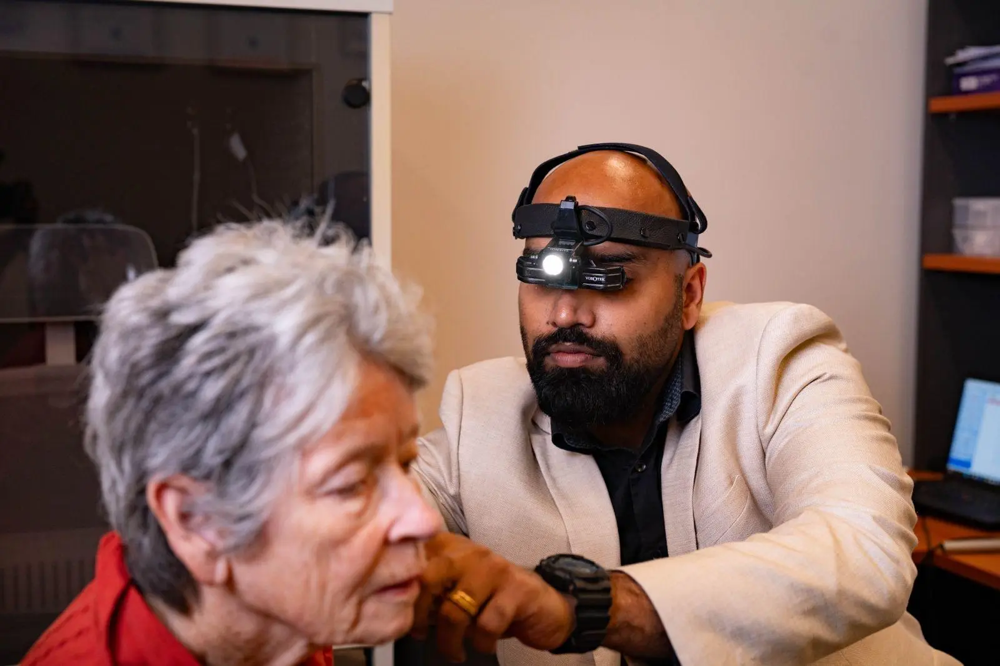

Clearer hearing and better living through personalised audiology care.
At Welfast Hearing, we provide expert hearing tests, advanced hearing aids, and personalised audiology care to help you hear clearly and reconnect with everyday conversations.
Our independent audiologists offer comprehensive hearing assessments, professional hearing aid fittings, and safe microsuction ear wax removal, using advanced diagnostic technology to accurately identify and manage hearing loss.
Welfast Hearing is an independent audiology clinic delivering expert hearing care with a strong focus on clinical outcomes and personalised support.
We provide comprehensive hearing tests and tailored hearing aid solutions without manufacturer bias, ensuring every recommendation is based purely on your hearing needs.
Our experienced audiologists use advanced diagnostic tools and modern hearing technology to improve speech clarity, reduce listening effort, and support better everyday communication.
At Welfast Hearing, we combine clinical expertise with advanced hearing care services to diagnose, treat, and manage hearing loss effectively at every stage.
Expert diagnosis and management of hearing loss with unbiased, patient-focused recommendations.
Accurate assessments using advanced diagnostic tools and validated outcome measures like COSI.
Tailored hearing aid solutions designed for different levels of hearing loss and real-world listening environments.
Solutions to improve conversations, reduce background noise challenges, and enhance daily hearing comfort.
Modern digital hearing aids with noise reduction, speech enhancement, and Bluetooth connectivity.
Ongoing support, fine-tuning, and regular reviews to maintain optimal performance and hearing improvement.
{{ service.title }}
{{ card.showMore ? card.fullContent : (card.fullContent | slice: 0 : 60) + "..." }}